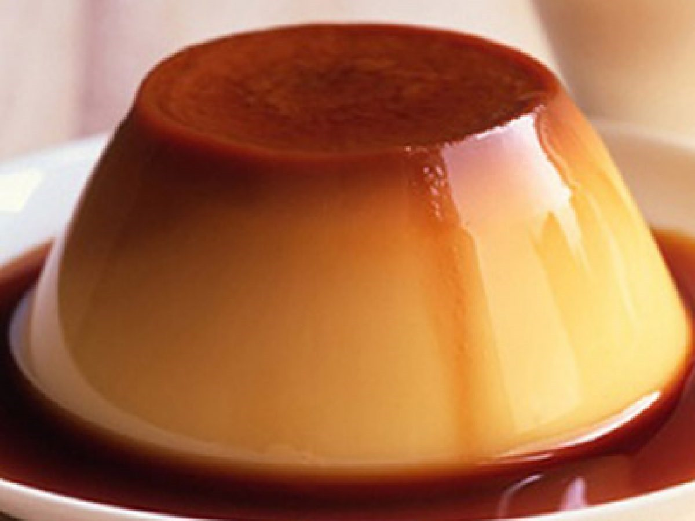

Krem Karamel

Krem Karamel Tarifi İçin Malzemeler
- 5 su bardağı süt (1 litre)
- 1 su bardağı toz şeker
- 6 adet yumurta
- 1 paket vanilya
- ½ adet limon kabuğu
Karameli için:
- 1su bardağıtoz şeker
- 4-5yemek kaşığı su
Krem Karamel Tarifi Nasıl Yapılır?
- Öncelikle, toz şekeri geniş bir tavaya alın ve kenarlarından 4-5 yemek kaşığı su ile ıslatın ve karıştırmadan bırakın. Bir süre sonra şekerin renk almaya başladığını göreceksiniz. O zaman karıştırabilirsiniz.
- Açık kahve rengine dönünce ocaktan alın. Tatlı kaselerinizi derin bir fırın tepsisine dizin. Her birinin tabanına birer kaşık karamel dökerek paylaştırın.
- Karameli hızlıca kaselerin tabanına yayın ve donması için bir kenara koyun.
- Bu sırada, geniş bir karıştırma kabında yumurtaları ve şekeri iyici köpürene kadar karıştırın. Vanilya ve limon kabuğu rendesini ilave ederek karıştırmaya devam edin.
- Köpüren yumurtalara yavaş yavaş 1 litre sütü ilave ederek karıştırmaya devam edin. Karışımın üstündeki köpüklü tabakanın hepsini bir kepçe yardımıyla sıyırarak alın.
- Karışımı karamelini koyduğunuz tatlı kaselerine eşit şekilde paylaştırın. Kapların yarısına gelecek kadar kaynamış suyu fırın tepsisine ekleyin. Arzu ederseniz tepsiyi fırına koyduktan sonra da suyunu ilave edebilirsiniz.
- Tatlıları, önceden ısıtılmış 170 derece fırında yaklaşık 45-50 dakika, üzerleri hafifçe kızarana dek pişirin. Krem karamel hazır! Fırından çıkardığınız krem karameller oda sıcaklığına geldikten sonra üzerini streçleyerek buzdolabında en az 4 saat dinlendirin.
- Krem karamel hazır! Dinlenmiş krem karamelin kenarlarını dikkatlice bir bıçak yardımıyla ayırdıktan sonra tabağa ters çevirerek servis yapın.
- Çilek ya da frenk üzümü ile süsleyerek hoş bir sunum yapabilirsiniz. Afiyet olsun!
Buraya tıklayarak yapılış videosunu izleyebilirsiniz...